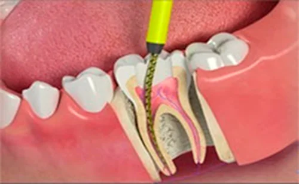

La endodoncia es el tratamiento dental más delicado de toda la boca (más complicado y minucioso que un implante, por ejemplo). Con la endodoncia salvamos los dientes que están infectados. Es especialmente importante que la endodoncia sea segura porque sobre este tratamiento se “apoyará” el diente o dientes que se reconstruyan. Una endodoncia correcta es garantía de un buen resultado.
La endodoncia es un tratamiento muy delicado (las muelas tienen varios conductos, son muy pequeños, presentan curvas, el espacio de trabajo es muy limitado, etc) por lo que es necesario que lo realice un dentista especializado en endodoncia: endodoncista. En la Clínica Dental DrMildred contamos con dos dentistas especializadas en endodoncia. Ambas poseen una formación muy amplia y actualizada en la materia así como una dilata experiencia.
Además, en nuestra clínica disponemos de un medio diagnóstico muy exclusivo que es la radiografía tridimensional: podemos ver las raíces de los dientes en tres dimensiones. Las técnicas de tratamiento son las más actuales (instrumentación rotatoria, localización de ápices, condensación de gutapercha, etc).
Los materiales que se emplean son de la mayor calidad y la esterilización de todo es concienzuda. Consiste básicamente en eliminar el nervio y tejidos blandos que hay en el interior del diente (corona y raíces). Después se rellena con un material inerte y se reconstruye el diente.
El motivo más habitual por el que hay que hacer una endodoncia es que hay infección dentro del diente. En estos casos no es suficiente con hacer un EMPASTE DENTAL hay que eliminar la infección.
Hacer una endodoncia bien es muy importante porque es la forma de garantizar que no se perderá ese diente. Si no se limpia bien la raíz de toda infección, las bacterias seguirán creciendo y se extenderán al hueso y, posteriormente, por una fístula hasta tejidos blandos (en la boca aparecerá un abceso que comunica por la fistula con la infección de hueso-diente).
Es un tratamiento que requiere tener unos medios diagnósticos adecuados y ser realizado por un dentista especializado en endodoncia: endodoncista. Nuestros endodoncistas de la clínica dental en Madrid
poseen una titulación específica, una formación muy completa y años de experiencia.
El objetivo del tratamiento dental en nuestra clínica es salvar el diente y evitar el dolor. Las endodoncias son tratamientos minuciosos, laboriosos pero sin dolor.
